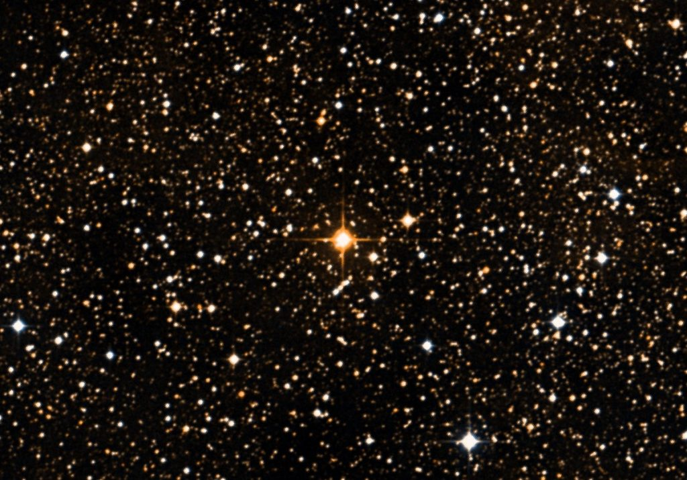
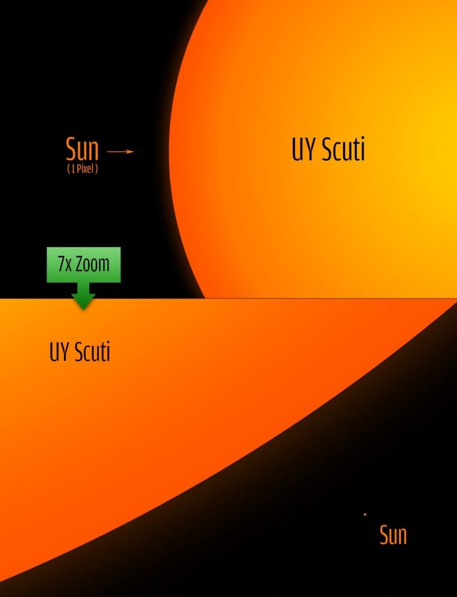

၁၈၆၀ ခုနှစ်မှာ ဂျာမနီ နိုင်ငံ ဘွန်း နက္ခတ်မျှော်စင် (Bonn Observatory in Germany) က ပညာရှင်တွေက ဒီကြယ်ကို ပထမဆုံး စတင် မှတ်တမ်းတင် ခဲ့ကြပါတယ်။ ဒါပေမယ့် အဲ့သည် အချိန်က ကြယ်တွေရဲ့ အရွယ်အစားနဲ့ ဒြပ်ထုကို တိတိကျကျ တိုင်းတာ မှတ်တမ်းတင်နိုင်တဲ့ နည်းပညာတွေ မရှိခဲ့ သေးတဲ့အတွက် သူတို့ရဲ့ ရှာဖွေ တွေ့ရှိမှုဟာ ဘယ်လောက် အရေးပါလဲ ဆိုတာကိုတော့ ဒီပညာရှင်တွေ မသိခဲ့ကြပါဘူး။
ဒီ UY Scuti ကြယ်ရဲ့ တကယ့် အရွယ်အစားကို ၂၀၁၂ ကျမှပဲ ခေတ်မှီ နည်းပညာတွေနဲ့ တိုင်းထွာကြည့်နိုင် ခဲ့ကြပါတယ်။ ဒီတော့မှ ဒီကြယ်ကြီးဟာ ဘယ်လောက်ထိ ကြီးမားလဲ ဆိုတာကို နက္ခတ် ပညာရှင်တွေ ရိပ်စားမိ ခဲ့ကြတာ ဖြစ်ပါတယ်။
၂၀၁၂ တိုင်းထွက်ချက် အရ UY Scuti ကြယ်ဟာ အဲ့သည် အချိန်အထိ ရှာတွေ့ခဲ့သမျှ ကြယ်တွေ အနက်မှာ အရွယ်အစားအားဖြင့် အကြီးဆုံး ဆိုတာ တွေ့ရှိခဲ့ကြပါတယ်။ ဒါဟာ အရင်က စံချိန်တင် ထားခဲ့တဲ့ Betelgeuse ကြယ်၊ VY Canis Major ကြယ်နဲ့ NML Cygni ကြယ်တွေရဲ့ အရွယ်အစားကို ဖြတ်ကျော်ပြီး ဗိုလ်စွဲခဲ့တာ ဖြစ်ပါတယ်။
ဆက်စပ်ဆောင်းပါး – ဂလက်ဆီ ဆိုတာဘာလဲ
ဖွဲ့စည်းပုံ
UY Scuti ကြယ်ဟာ ပုံမှန် ကြယ်တစင်းတော့ မဟုတ်ပါဘူး။ အမျိုးအစား သတ်မှတ်ချက် အရဆို သူဟာ ဧရာမ ကြယ်နီကြီး (Red Supergiant Star) အမျိးအစား ဖြစ်ပါတယ်။ ဒီ ဧရာမ ကြယ်နီကြီး တွေဟာ အများအားဖြင့် သက်တမ်း ကြီးရင့် အိုမင်းပြီး ဇရာဝင် နေတဲ့ ကြယ်တွေပါ။ကြယ်တွေ သက်တမ်း ကြီးရင့်လာလို့ သူတို့ရဲ့ အူတိုင်မှာ လောင်ကျွမ်းစရာ ဟိုက်ဒြိုဂျင် ကုန်သွားတဲ့ အခါ ဟီလီယံ တွေကို ဆက်လက် လောင်ကျွမ်း ကြပါတယ်။ ဒီအခါ ဟီလီယံ လောင်ကျွမ်းမှုရဲ့ တွန်းကန်အားကြောင့် ကြယ်အိုကြီး တွေရဲ့ အပြင်လွှာဟာ အပြင်ဖက်ကို ဖေါင်းကား ပြီး ထွက်လာကြပါတယ်။ ဒီနည်းနဲ့ ကြယ်တွေဟာ ဧရာမ ကြယ်နီကြီး တွေ အဖြစ် ကူးပြောင်းလာကြတာ ဖြစ်ပါတယ်။
ဒီလို အပြင်လွှာက ဖေါင်းကား လာတဲ့အခါမှာ မျက်နှာပြင် အပူချိန်က အရင် ဟိုက်ဒြိုဂျင် လောင်ကျွမ်းတုန်းကလောက် မပူတော့ပါဘူး။ ဒီလို မျက်နှာပြင် အပူချိန် ကျလာတဲ့ အတွက် ကြယ်ရဲ့ အရောင်ဟာ အဖြူရောင်က အဝါရောင်၊ နောက် အနီရောင် အဖြစ် ကူးပြောင်းသွားတာ ဖြစ်ပါတယ်။
တည်နေရာ
ဒီကြယ်ဟာ မစ်ကီးဝေး ဂလက်စီ ကြီးအတွင်းမှာ တည်ရှိပြီး ကမ္ဘာကနေဆို အလင်းနှစ် ၅,၁၀၀ ခန့် ဝေးပါတယ်။ သိန်းငှက် ဓါတ်ငွေ့တိမ်တိုက်ကြီး (Eagle Nebula) လို့ လူသိများတဲ့ Messier 16 နက်ဗြူလာ ကြီးရဲ့ မြောက်ဖက်နားမှာ သူ့ကို တွေ့နိုင်မှာ ဖြစ်ပါတယ်။ဆက်စပ်ဆောင်းပါး – အလင်းနှစ် ဆိုတာဘာလဲ

အရွယ်အစားနှင့်ဒြပ်ထု
UY Scuti ကြယ်ရဲ့ တကယ့် အရွယ်အစားကို ခန့်မှန်းရတာက ထင်သလောက်တော့ မလွယ်ကူ လှပါဘူး။ ဒါပေမယ့် နောက်ဆုံး ၂၀၁၉ မှာ တိုင်းထွာရရှိတဲ့ အတိုင်းအထွာ တွေအရဆို ဒီ ကြယ်ရဲ့ မျက်နှာပြင် အပူချိန်ဟာ လျော့နည်း လာတာမို့ ကြယ်ရဲ့ အရွယ်ဟာလဲ သေးငယ်လာတယ်လို့ ဆိုပါတယ်။ ဒီ နောက်ဆုံး တိုင်းထွာ မှုအရ UY Scuti ကြယ်ရဲ့ အချင်းဝက်ဟာ နေရဲ့ အချင်းဝက်ထက် အဆ ၁,၇၀၈ ဆ ပိုကြီးတယ်လို့ ဆိုပါတယ်။ဒီ အရွယ် အစားမှာတောင်မှ UY Scuti ကြယ်ဟာ မစ်ကီးဝေးထဲက အကြီးဆုံး ကြယ်တွေ စာရင်းထဲ ပါနေဆဲ ဖြစ်ပါတယ်။ ဒါပေမယ့် ဒီ နောက်ဆုံး တိုင်းထွာမှုသာ မှန်မယ်ဆိုရင် UY Scuti ကြယ်ဟာ စကြာဝဠာထဲက ရှာဖွေ တွေ့ရှိခဲ့သမျှ ကြယ်တွေထဲမှာ အကြီးဆုံး မဟုတ်တော့ ပါဘူး။
ဒါပေမယ့်လဲ UY Scuti ကြယ်ရဲ့ အရွယ်အစား တိုင်းထွာရာမှာ မသေချာမှုတွေ ရှိနေတာမို့ နက္ခတ် ပညာရှင် အတော်များများကတော့ ဒီကြယ်ကို မစ်ကီးဝေးထဲမှာ ရှာတွေ့သမျှထဲ အကြီးဆုံး ကြယ်အဖြစ် ဆက်လက် သတ်မှတ် ထားကြဆဲ ဖြစ်ပါတယ်။ နောက်ပြီး ဒီကြယ်ရဲ့ အရွယ်ကလဲ ကြီးလိုက် သေးလိုက် ဖြစ်နေတယ်လို့ ဆိုပါတယ်။

ဆူပါနိုဗာဖြစ်တော့မလား
ယခုလက်ရှိ အချိန်မှာ UY Scuti ကြယ်ဟာ ဟိုက်ဒြိုဂျင် အစား ဟီလီယံ တွေကို လောင်ကျွမ်းတဲ့ အဆင့် ရောက်နေပါပြီ။ တဖြည်းဖြည်းနဲ့ ဟီလီယမ်တွေ ကုန်သွားရင် ဒီ့ထက် ပိုလေးတဲ့ ဒြပ်စင်တွေကို လောင်ကျွမ်းပြီး အသက်ဆက် ရမှာ ဖြစ်ပါတယ်။ဒီလို လောင်ကျွမ်းစရာ ဒြပ်စင်တွေ ကုန်သွားရင် ကြယ်ရဲ့ ဗဟိုက လေးလံတဲ့ ဒြပ်စင်တွေရဲ့ ဆွဲအားကြောင့် ကြယ်ကြီးရဲ့ အူတိုင်ဟာ အတွင်းကို ပြိုကျပြီး အပြင်လွှာကတော့ အာကာသထဲ ပေါက်ကွဲထွက် သွားမှာ ဖြစ်ပါတယ်။ ဒါကို ဆူပါနိုဗာ ပေါက်ကွဲမှု လို့ ခေါ်ပါတယ်။
ပညာရှင် အများစုက UY Scuti ကြယ်ဟာ ဆူပါနိုဗာ ပေါက်ကွဲမှု မဖြစ်မီ အပူချိန် ပြန်မြင့်တက်လာပြီး ဧရာမ ကြယ်ဝါကြီး (သို့) ကြယ်ပြာကြီး တစ်စင်းအဖြစ် ကူးပြောင်းသွားမယ်လို့ ယူဆကြပါတယ်။
ဒီလို ပြောင်းလဲသွား ပြီးတဲ့ အခါမှာ ပြင်ပအလွှာက ဓါတ်ငွေ့တွေ အာကာသ ထဲကို လွင့်စင် ထွက်သွားပါလိမ့်မယ်။ ဒီလို အပြင်လွှာ လွင့်ထွက်သွားတဲ့ အတွက် အတွင်းက အူတိုင် ပေါ်လာပြီး ဒီအခါ ကျတော့မှ ဆူပါနိုဗာ အနေနဲ့ ပေါက်ကွဲသွား လိမ့်မယ်လို့ ယူဆကြပါတယ်။
ဒီလို ပေါက်ကွဲသွားတဲ့ အခါမှာ အကွာအဝေး ဝေးကွာ လွန်းတာကြောင့် ကမ္ဘာပေါ်ကိုတော့ ဘာမှ သက်ရောက်မှု ရှိမှာ မဟုတ်ပါဘူး။
ဆက်စပ်ဆောင်းပါး – နေရဲ့သက်တမ်း ကုန်သွားရင် ဘာဖြစ်လာမလဲ
သက်ရှိတွေရှိနိုင်မလား
လက်ရှိ အထိတော့ UY Scuti ကြယ်ကို ပတ်နေတဲ့ ဂြိုဟ်ရံ ရှိတယ်ဆိုတဲ့ အထောက်အထား ရှာမတွေ့ သေးပါဘူး။ ဂြိုဟ်ရှိခဲ့မယ် ဆိုရင်တောင် နေက လွှတ်ထုတ်တဲ့ ရေဒီယို သတ္တိကြွ လှိုင်းတွေ ပြင်းထန်လွန်းတာကြောင့် သက်ရှိတွေ အသက်ရှင် နေထိုင်နိုင်ဖို့ ဘယ်လိုမှ မဖြစ်နိုင်ပါဘူး။နောင်အနာဂတ်
UY Scuti ဆူပါနိုဗာ အဖြစ် ပေါက်ကွဲသွားတဲ့ အချိန်ကရင် ကမ္ဘာကနေ ထင်ထင်ရှားရှား မြင်တွေ့ကြရမှာ ဖြစ်ပါတယ်။ ဒါပေမယ့် ဘယ်အချိန်လောက်မှာ ဆူပါနိုဗာအဖြစ် ပေါက်ကွဲသွား မလဲ ဆိုတာနဲ့ ပါတ်သက်လို့တော့ ပညာရှင်တွေ အနေနဲ့ အဖြေပေးနိင်ခြင်း မရှိသေးပါဘူး။Reference: UY Scuti Facts | The Nine Planets